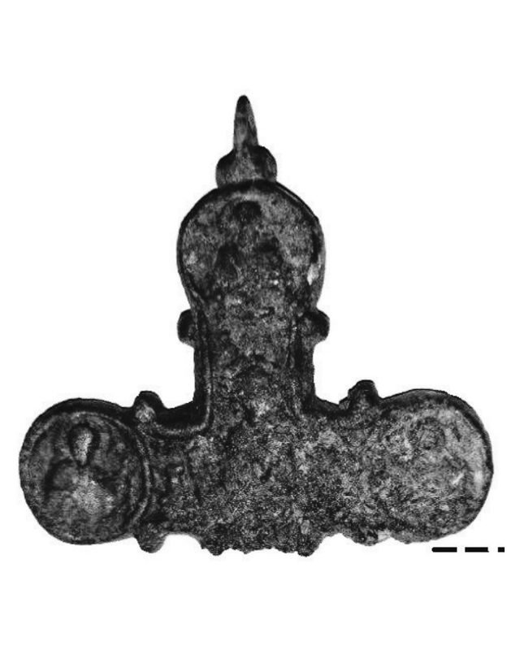
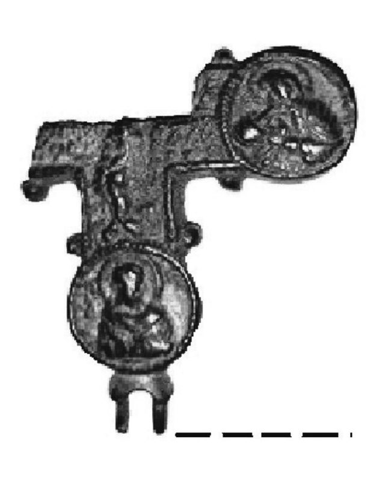

Catalog › CE-0217 · JOS2022-2
Encolpion bivalv în două fragmente, cu Maica Domnului în picioare și Răstignirea, com. Trifești
prima jumătate a sec. XIII (1201–1250) · com. Trifești, „Dealul Cimitirului”, jud. Neamț, România · Complexul Muzeal Național Neamț, Piatra Neamț, inv. 29.207 (fragmentul cu Răstignirea)
double-sided reliquary cross (enkolpion), bronz; prima jumătate a c. XIII (1201–1250); found at com. Trifești, „Dealul Cimitirului”, jud. Neamț, România; kept at Complexul Muzeal Național Neamț, Piatra Neamț.




Identificare
- Categorie
- Encolpion bivalv (relicvar)
- Material
- Bronz
- Tehnică
- Turnare în relief
- Stare
- Fragmentară
- Dimensiuni
- Î 77 × L 55 mm
Iconografie
- Descriere avers
- Aversul (partea cu o singură urechiușă de fixare): Maica Domnului în picioare, cu maphorion ce urmează forma creștetului și coboară în pliuri, umerii proeminenți, mâinile împreunate în jos; imaginea centrală e flancată de medalioane cu busturi de sfinți în relief, la capetele trilobate ale brațelor laterale și în brațul de sus. Brațul de jos lipsește, rupt din vechime.
- Descriere revers
- Reversul: scena Răstignirii, păstrată pe două brațe și o bună parte din mijloc; picioarele ușor flexate ale Mântuitorului, tibia stângă peste dreapta, tălpile pe suppedaneum; sub brațe un câmp epigrafic nedescifrabil. Medalioanele păstrate au chenar de șnur răsucit și busturi de sfinți aureolați. Piesa e ruptă, lipsesc partea de sus și medalioanele de sus și din dreapta.
Datare și atribuire
- Datare
- prima jumătate a sec. XIII (1201–1250)
- Centru
- Rusia Kieveană
- Tipologie
- Spinei 1992, tip B
Descoperire
- Localitate
- com. Trifești, „Dealul Cimitirului”
- Regiune
- jud. Neamț
- Țară
- România
- Context
- Descoperire izolată
- Coordonate
- 46.9276° N, 26.8276° E
- Precizia locului
- Coordonate exacte
Păstrare și referințe
- Colecție
- Complexul Muzeal Național Neamț, Piatra Neamț
- Nr. inventar
- 29.207 (fragmentul cu Răstignirea)
- Bibliografie
- V. Josanu, Encolpioane inedite descoperite recent în județul Neamț, în Evul Mediu neterminat / A befejezetlen középkor / The Unfinished Middle Ages. Omagiu adus profesorului Adrian Andrei Rusu la împlinirea vârstei de 70 de ani, ed. G.-D. Iegar, P. L. Szűcs, G. Rusu, F. Vasilescu, Cluj-Napoca, Editura Mega, 2022, p. 707–723 [Josanu 2022], p. 709–711, reprodusă la Fig. 4–6 (planșele, p. 720–721). Bibliografie citată în sursă: Spinei 1992, 163; Teodor 1975, 82; Olejnikov 2018, 280; Majko 2016; Nečitajlo–Nečitajlo 2009, 41; Ioniță 1962, 736.
- Figura
- Fig. 4–6
- Planșe
- Josanu 2022, p. 720–721
- Analogii
- Cândești, jud. Neamț (1954, cimitirul unei biserici vechi de lemn); Trifești, jud. Iași (1959, cimitir medieval); Sugdeia (Sudak), Crimeea (1929); pentru inscripții, Teodor 1975, 82–84.
- Observații
- Datare după Josanu: prima jumătate a sec. XIII. Cele două fragmente (7,7 × 5,5 cm) sunt componentele aceluiași exemplar; găsite pe un teren proaspăt arat, la 5–10 m una de alta, la cca 15 cm adâncime, pe terenul numit „Dealul Cimitirului” (ceramică medievală, chirpic; neînscris în Repertoriul Arheologic Național), de Ovidiu Vasile Constantin; predate la Direcția Județeană pentru Cultură Neamț. Ambele fragmente au pe spate adâncitura pentru relicve; corodarea e mai avansată la unul dintre ele. Turnare în tipare de piatră, după autor. Coordonate: citite din marcajul de pe harta Fig. 7 a sursei (46°55'39,2"N 26°49'39,2"E).
Citare: Corpus Encolpiorum, CE-0217, Encolpion bivalv în două fragmente, cu Maica Domnului în picioare și Răstignirea, com. Trifești, https://vitaliejosanu1979-ux.github.io/primul-meu-proiect/piese/JOS2022-2/ (accesat 2026-10-17).